Successorships
Fault-tolerant local WebApps
Arthur Marques, Felix Grund, Paul Cernek
Outline
-
Motivation
-
Successorships
-
Evaluation & Future work
Context
- Networking capabilities are becoming ubiquitous across different types of devices

...and in the Future?
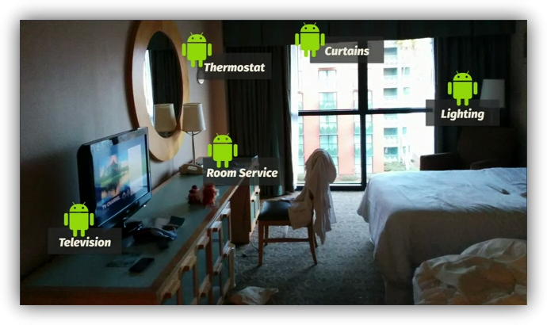
How do we configure these devices in a local-area network?
Back in the day...
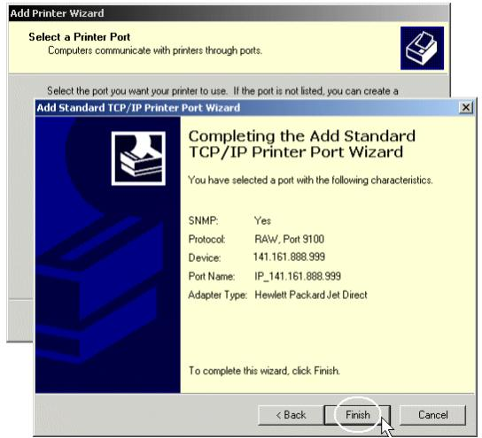
Zeroconf
- Zero-configuration networking
- Discovers computers or peripherals in a network automatically
Zeroconf
-
mDNS(service advertisement) -
DNS-SD(service discovery)
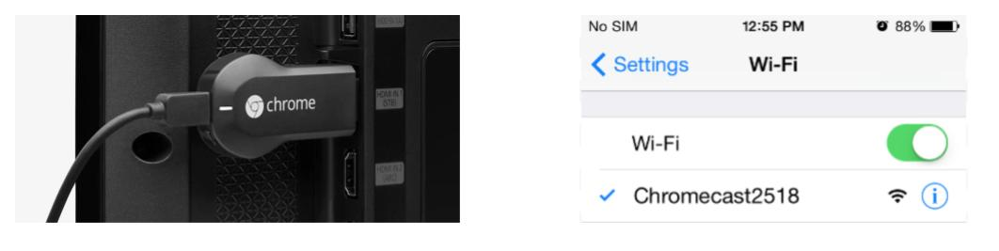
What if...
-
I want to write one such simple service?
-
Implement a server component that advertises a service (and ship the component to users)
-
Write a client component communicating with the service (also ship that component to users)
-
- On what device/OS should these components run?
What if... (2)
-
I could just implement a Webapp that spins up a server and advertises it?
-
No special device/platform
-
-
Clients can connect to the webapp with any browser
-
No app installation required
-
This would...
-
Eliminate traditional installation models
-
Enable any browser to become a server!
Imagine...
Browser vendors are trying...

Looks like this
window.navigator.publishServer('527 Presentation')
.then(function(server) {
console.log("Server started");
});
One Problem
-
Applications operating in Zeroconf settings that require state
-
Unreliable wireless links
-
Host mobility
-
What if the current server leaves the room?
-
Example - Queue app
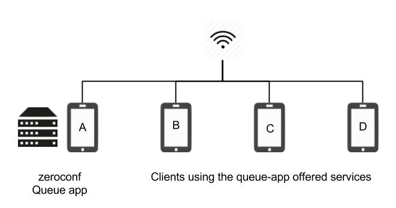
Example - Queue app
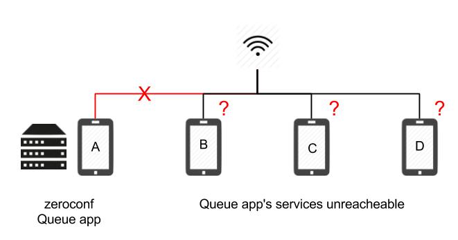
We claim that fault-tolerance is a desirable property for Zeroconf applications that share a state
Successorship
Goals
-
Provide an ease-to-use API to build Zeroconf browser apps
-
Decouple Zeroconf logic from the application logic
-
Seamlessly provide fault-tolerance to such apps
Assumptions
-
Clients in the network trust each other
-
Applications follow a client-server model
-
Applications are not traffic intensive
-
No bursts of requests
-
No payload higher than some threshold τ
-
Successorship Stack
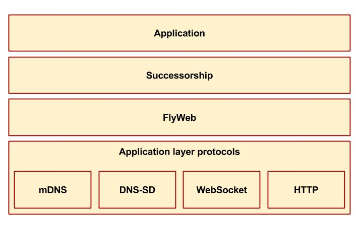
How does it work?
Step-by-step
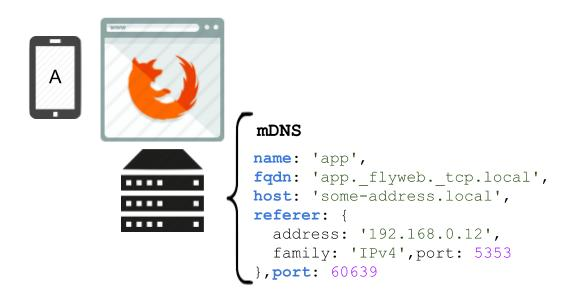
'App'service is registered under the.localdomain
Step-by-step
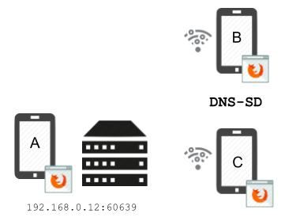
- Clients query services in the network
Step-by-step
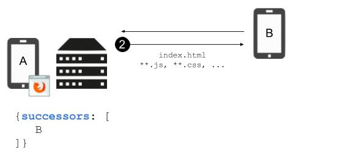
- Upon service discovery, client makes a HTTP GET at /
Step-by-step
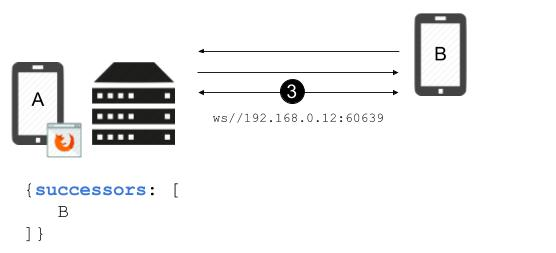
- Server serves initial html, js, css files
Step-by-step

- Client establish a WebSocket connection for further communication
Step-by-step
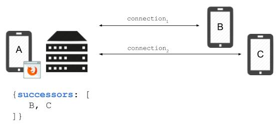
- As clients connect, server keeps a list of successors
Step-by-step
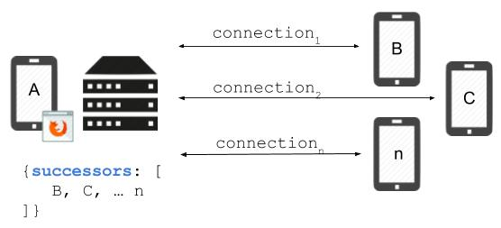
- Clients also keep a replica of the server state
Step-by-step
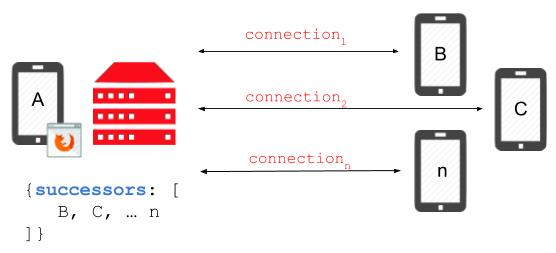
- Upon server failure, ws connections are lost
Step-by-step

- As clients have a replica of the server's last state, they evaluate who is the successor
Step-by-step
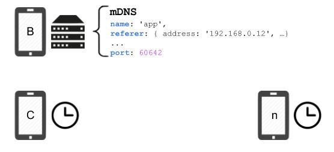
'App'service is once again registered under the .local domain
Step-by-step

- Clients detect a new instance of the same
'App'service and establish a new connection
How do I use it?
API Overview
Shippy.register(serviceName, {
init: function
operations: map: key-function
});
Shippy.call(operation, payload);
Shippy.on(successorship event, callback);
init
- Adds app required variables to the server state
let init = function(state) {
state.queue = [];
};
operations
- Add app behavior to the server (as operations that manipulate the state)
let operations = {
add: function(state, params) {
if (state.queue.indexOf(params) < 0) {
state.queue.push(params);
}
}
}
call
- Calls one of the server operations with a specific payload
Shippy.call("add", { name: "Darth Vader" });
on
- Defines how the app will handle server events
Shippy.on("stateupdate", function(state) {
updateUi(state);
});
Under the hood
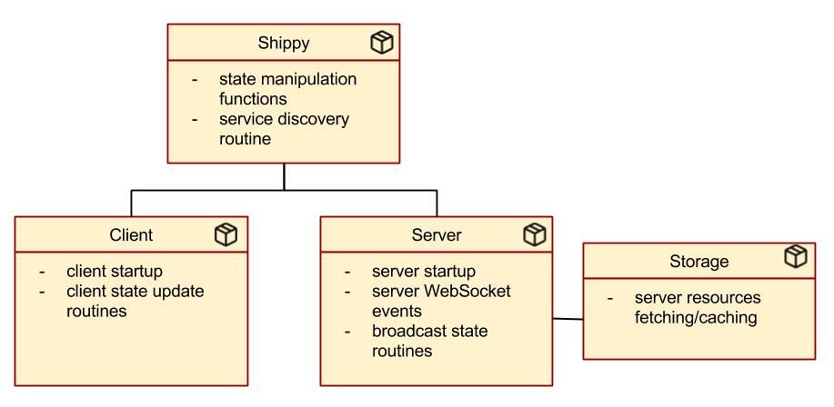
State broadcast
-
Operation/payload to be executed on the client end
Handled scenarios
-
Server disconnection
-
Client disconnection
-
Chained disconnection
How do we plan to evaluate it?
Evaluation
-
Proof of concept apps:
shippy-presentationandshippy-queue -
TODO: Establish small wireless network and log metrics
-
Recovery time, Messages RTT
-
Packets' size, # of connected clients
-
Future Work
-
Improve recovery time
-
Keep track of all applied operations to reconstruct the state
-
Handling network partition/merging